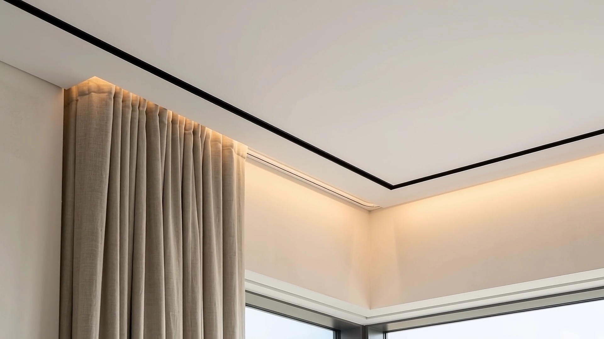
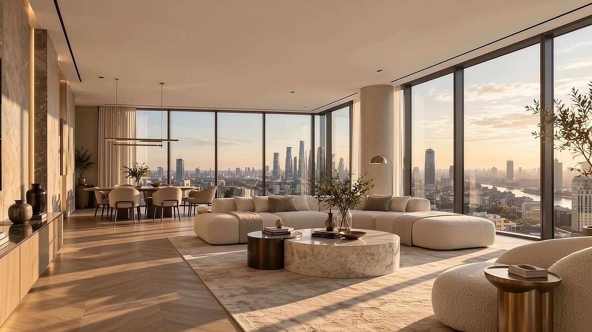

01 · Классика
Матовый шёлк
Бархатистая фактура без бликов — как идеально отштукатуренный белый потолок.
- Блик
- нет
- Свет
- рассеянный
Манифест
Малевич написал «Чёрный квадрат», чтобы начать искусство с нуля. Мы начинаем интерьер с идеально белой плоскости: без швов, без запаха, без компромиссов.
Коллекция полотен · класс A+
Наведите курсор: это лампа. Посмотрите, как каждое полотно встречает свет — так же, как оно будет выглядеть у вас вечером.
Бархатистая фактура без бликов — как идеально отштукатуренный белый потолок.
Мягкое перламутровое отражение визуально приподнимает потолок и добавляет дневного света.
Дышащее бесшовное полотно из Германии. Монтаж без тепловой пушки, текстильная фактура.
Защита от заливов

Инженерные системы
Теневой профиль EuroKraab отделяет потолок от стены тонкой тенью. Ни плинтусов, ни пластиковых вставок — только архитектура. Ночью в этой линии живёт свет.
Портфолио
Потяните ручку. Один день работы бригады — и потолок перестаёт быть проблемой.

Москва, ЖК Символ · 120 м² · монтаж 1 день
Москва, ЖК Сердце Столицы · 95 м² · теневой профиль
История
Первые французские полотна на объектах Москвы. Название — в честь «Чёрного квадрата».
Немецкие тканевые системы: бесшовно, без нагрева, с текстильной фактурой.
EuroKraab и зазор 6 мм — потолок становится частью архитектуры.
Световые линии, треки и скрытые карнизы, встроенные в полотно.
Гарантия 15 лет по договору и бригады, которые уходят с чистого объекта.
Онлайн-смета
Цена считается сразу. Точную фиксированную смету инженер назовёт после бесплатного лазерного замера.